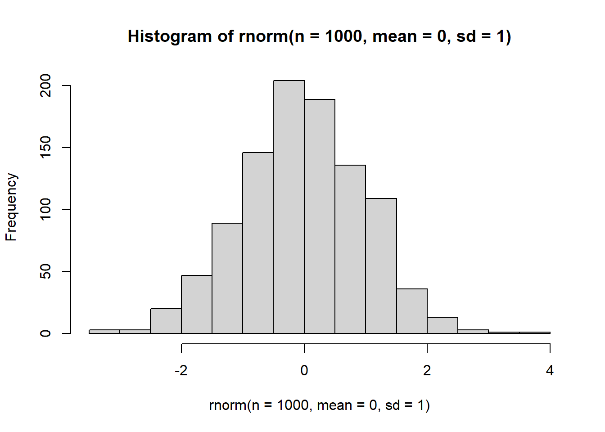

40 Statistik Kedokteran Dasar
40.1 Dasar-dasar Penulisan Ilmiah Kedokteran dan Plagiarisme
Metode sains: bisa diulang dengan hasil yang sama. observasi, measurement, verification and evaluation (self correction)
40.1.1 Methods of acquiring knowledge
- Method of Tenacity
- Method of Authority
- Method of Intuition
- Method of Science
40.1.2 Benefits of Conducting Research
- Expanding frontiers of knowledge
- New inventions and discoveries
- Solving problems affecting the society
- Increasing efficiency and reducing costs
- Research strives to make life easier
- Luxury and comfort
- Infotainment
- Economic growth
40.1.3 Qualities of a researcher
- Scientific attitude
- Research aptitude
- Persistence
- Self Motivation
- Courage to ask questions
- Skepticism and receptivity
- Objectivity
- Industriousness
- Honesty and truthfulness
- Open-mindedness
- Above-average intelligence
- Knowledge
- Imagination
- Self-confidence
- Search for perfection
- Team spirit
40.1.4 Bioethical
- Autonomy - consent to treatment
- Beneficence
- Justice
- Utility - balancing benefit
- Inform Consent
- Confidentiality
40.1.5 Induction and Deduction in Research
Deductive reasoning is the process of reasoning from a general assumption to a specific application. Contoh: General proposition: all crows are black Specific proposition: this bird is a crow, therefore it is black
Indcution normally involves generalization from the behavior of a few samples to that of a population contoh: all jasmine flowers are scented, if a situation or condition is true in all observed cases, then the situation or condition must be true in all cases.
Hypothetico-deductive method or inductive-deductive method.
40.1.6 Scientific Method
It should be unprejudice
- Make observations or gather information
- Develop hypothesis
- Predicts results
- Design an experiment to falsify the hypothesis
- Conduct the experiment and collect data
- Evaluation and conclusion
- Acceptance, modification or rejection of the hypothesis
40.1.7 First Draft
- Why did you start the experiment? (introduction)
- What did you do? How was it done (The materials and methods)
- What did you find? What was learned? (the results)
- What do the results mean? How do they relate to what is already known? (the discussion)
40.1.8 Structure of a Research Paper
- Title
- Running Title
- Author
- Institution
- Abstract
- Keywords
- Introduction
- Materials and Methods
- Results
- Discussion
- Conclusion
- Acknowledgements
- References
- Tables and Figures
40.1.9 Seven Categories of plagiarism
- direct plagiarism
- mosaic plagiarism
- paraphrase plagiarism
- insufficient acknowledgement
- complete plagiarism
- self plagiarism
- accidental plagiarism
40.1.10 Characteristics of Good Research
- Research is based on the work of others
- Research is a blend of logic and imagination
- Research tries to identify and avoid bias
- Repeatability
- Research must be generalizable to other settings
- Research is systematic
- Research generates new questions
- Research is an apolitical activity
40.2 Kiat-kiat Publikasi Majalah Terakreditasi dengan OJS
40.2.1 Kendala Publikasi di Indonesia:
- Indonesia lack of language access. Why we dont make one in Bahasa Indonesia?
- Lack of Cultural backgroud dalam menulis.
40.2.2 Kenapa publikasi penting?
- Rekognisi atas hasil penelitian anda baik pengakuan regional, nasional dan internasional
- H Index
- Jaminan kolaborasi di tingkat regional, nasional, dan internasional
40.2.3 Jurnal
Jurnal biasanya di rangking berdasarkan dimana jurnal tersebut di indeksasi (misal scopus, medline, ISI, Sinta, dll)
Kriteria Jurnal International
- Tulisan memenuhi kaidah ilmiah dan etika keilmuan
- Memiliki ISSN
- Ditulis dengan bahasa resmi PBB (inggris, france, arab, rusia, and china)
- Memiliki terbitas versi online
- Dikelola secara profesional
- Editorial board pakar di bidangnya, dan berasal dari berbagai negara
- artikel ilmiah diterbitkan dalam satu isu berasal dari penulis berbagai negara
- memuat karya ilmiah dari penulis yang berasal dari berbagai negara dalam setiap penerbitannya
- Terindeks database international berputasi.
Publikasi:
- Submit ke jurnal dgn OJS
- Jika ditolak, edit ulang dan perbaiki.
Perlu diketahui: - Penulisan naskah/manuskrip ilmiah merupakan suatu tangtangan, seni dan kemampuan mengelaborasi hasil penelitian. - Ikuti kaidah IMRAD. Introduction biasanya sudah menggambarkan M,R,D nya.
Author vs Behavior
- Author
- Want to publish more, write in detail
- peer review essential
- other journal functions crucial
- wider dissemination
- Reader
- want to read less. (judul yg baik)
- Want integrated system
- Browsing is crucial
- Quality information is important
- Want to read less
Unsur Utama dalam Publikasi:
Isue Etik + pernyataan tidak ada conflict of interest + Pencantuman sumber dana + Image manipulation guidelines
Gaya Selingkung dan Bahasa
- Sesuai author guidelines
Struktur naskah/manuskrip ilmiah
- Title: judul clear, precise, including keywords. do not use abbreviations and jargon
- Authors Listing: only include those who have made an intelectual contribution to the research, or those who will publicly defend the data and conclusion, and who have approved the final version. Gift (atasan, dekan, kepala lab), Guest (pemberi dana), and Ghost author (ini tidak boleh, atas dasar sembarangan mengikutkan namanya).Ghost writer, penulis lain yg menawarkan jasa (secara etika diijinkan).
- Abstract: ditulis selesai IMRAD. Tidak boleh sebelum lengkap dan menyeluruh menulis IMRAD. Bisa terjadi inkonsistensi dgn discussion.
- Introduction: clearly state the problem being investigated, background that explains the problem, reasons for conducting the research. Summarize relevant research to provide context. State how your work differs from published work. Identify the questions you are answering.
- Methods: Jika RCT sebaiknya diregister, agar SOP penelitian bisa dibaca orang lain dan terrekognisi. PRovide the readers enough details so they can understand and replicate your research. Explain how you studied the problemm identify procedures, order the chronologically where possible. Include the frequency of observations, what types of data were recorded.
- Results: present the finding objectively, follow logical sequence, show figures/table and provide brief description.
- Discussion: Describe your results in the context of what was already known, how the result relate, do not extend your conlusion beyond what is directly supoorted by you results, outline the next step of the study.
- References: acknowledge sources, citation follow journal guideline.
Submit artikel/pemilihan jurnal
proses publikasi/peer review
Dulu hierarki tertinggi evidence adalah: Validitas Pada Penelitian Randomized, controlled, clinical trial.
Validitas Internal
- Ada kontrol
- Ada Randomisasi
Validitas External
- loss to follow up < 20%?
Saat ini sudah bergeser pada Systematic Review dan Metanalysis.
40.3 Effect Size, COnfidence Interval
40.4 Uji Hipotesis
Mengacu pada distribusi populasi:
Asumsi dasar H0; u1 = u2 (hipotesis nol,tidak ada perbedaan) H1: u1 =/ u2 (hipotesis alternatif, ada perbedaan)
H1 diterima bila terjadi kesalahan kecil: kesalahan tipe 1, false positivie : dihitung peluang kesalahan akibat variasi sampel => nilai P batas penolakan (alpha) 0,05;0,01
- beta: kesalahan tipe 2, false negative: ditetapkan
- metafor: seperti persidangan
Jenis Hipotesis: - superiority testing: A lebih baik daripada B - non-inferirority: membuktukan perbedaan dalam rentang yang tak berbeda. (contoh penelitian obat biosimilar)
makna p value - chance play a role in sample value if H0 accepted
significant level (alpha) if p< 0.05 or 0.01 as cut off dicari: power(1-beta) di set di awal 80% atau 90% ditentukan the answer yes or no tetapi tidak bisa melihat seberapa…. sehingga saat ini tidak hanya boleh melihat P value, karena harus melihat effect size dengan confidence interval.
menghitung confifdence interval :
40.4.1 Clinician and Statistician
Nilai P tidak memberikan informasi besar perbedaan hasil (effect size) beda yang kecil saja memberikan signifikansi statsitik bila N besar
beda yang besar bisa tidak memberikan signifikansi statistik bila N kecil (error type 2)
Maka perlu ukuran sampel yang sesuai, dan perlu memaknai sebuah statistical significance dengan makna klinis (clinical importance)
40.5 Korelasi Linier dan multipel
Dasar-dasar dan aplikasi biostatistika klinik
- mengestimasi kuatnya hubungan atau besarnya perbedaan (besarnya efek)
- melakukan uji kemaknaan statistik (inferensial)
- mengontrol pengaruh variable pengganggu terhadap besar efek dan inferensi
hubungan semu dapat diperoleh dari analissis bivariat, lalu multivariat untuk mengekslusi hubungan semu.
Korelasi = antara independen dan dependennya memiliki hubungan garis lurus. Korelasi ada 2, liner dan non linier. Korelasi ada fleksibilitas variabel independen dan dependennya.
Jenis analisis statistik: - Tentukan pertama parametrik atau non-parametrik - Skala variabel: kontinyu (variabel skala dan interval), ordinal, nominal, diskriit - Uji normalitas: normal/non normal (tes kolmogorov smirnov atau shapiro-wilk) - Uji kesamaan varisi: sama/tidak sama (uji levene) - Uji kolinearitas: hubungan antar variabel independen (penting untuk uji partial korelasi, regresi linier berganda)
variabel: - jika bisa dipecah menjadi 5 atau lebih, bisa dikatakan continyu. - jika kontinyu dipecah menjadi beberapa kategori : bisa ordinal - jika yes no= nominal - diskrit = tidak bisa dibedakan antara kategori?
Pemilihan uji statistik: 1. tentukan variabel dependen (umumnya satu variable dependen) 2. tentukan jumlah variabel independen - bila tidak ada variabel independen, statistik yang dipakai adalah analisis univariat (deskriptif) - bila ada satu variabel independen, statistik yang dipakai adalah bivariat - bila ada lebih dari satu variable independen, statistik yang dipakai adalah analisis multivariat.
Sentral limit theorem: jika lebih dari 30 bisa berdistribusi normal.
40.6 Regresi Linier Sederhana
.. lanjutan korelasi linier dan regresi linier sederhana dan multipel
Memilih analisis bivariat
| var_ind | var_dep | ana_biv | ana_mul |
|---|---|---|---|
| kontinyu (normal) | kontinyu(normal) | korelasi pearson(rho) ; regresi linier sederhana (slope, intercept) | korelasi pearson partial / regresi linier berganda |
| kontinyu(non-normal) | kontinyu (non-normal) | korelasi speramn (rho) | korelasi spearman parsial |
Regresi Linier
asumsi regresi linier: - distribusi nornal - tidak ada kolinearity - variansi asusmsi sama
Regresi nilai: intercept (a), slope/tangent (bx) dan error (e) Intercept: nilai Y saat X = O slope: perubahan rerata variabel dependen untuk setiap unit perubahan variabel independen
Yi = a + bX + ei (a atau b0 dan b1 adalah effect size) dan p value
Korelasi Linier
Mengukur seberapa konsisten peribahan variabel indepen diikuti oleh peribahan variabel dependen (hubungan kovariansi) koefisien korelasi (r), menunjukan kekuatan hubungan antara variabel dependen dan variable independen.
ada 2 nilai: (rentang nilai -1 sd +1) - koefisien korelasi (rho), Ada kecenderungan hubungan x dengan y, tetapi tidak menunjukan seberapa kuat. - koefisien determinasi (r atau R2), seberapa persen pengaruh independen mempengaruhi dependen (effect size) - tambahan p value
contoh R2 adalah R2 45% pada konsumsi garam dan tekanan diastolik adalah variasi tekanan darah dapat dijelaskan sebesar 45% oleh konsuksi garam, sisanya 55% dijelaskan oleh factor lain. Nilai ini yang dimaknai oleh klinisi serta signifikansi korelasi (p) (kemungkinan hasil korelasi akibat by chance).
tambah interpretasi regresi: a (intercept) = jika seorang tidak konsumsi garam berapa tekanan darahnya b (slope) = kenaikan tekanan darah setiap unit peningkatan konsumsi garam.
Perbedaan korelasi dan regresi adalah korelasi belum bisa menentukan ind dan dependen, sedangkan regresi harus sudah ditentukan mana independen dan dependent.
Visualisasi dengan scatter plot.
Regresi dan korelasi Linier Berganda
Multipel variabel independen melihat pengarihnya terhadap variabel dependen.
Jika menggunakan korelasi maka nilainya rho partial (korelasi partial), jika regresi multipel (regresi berganda) maka slopenya multipel (a + b0 + b1 + bx… + e)
Nisal: peneliti ingin mengetahui antara LFG (ml/menit) dengan estimasi data IMT (kg/m2), umur (tahun), dan TDD (mmhg), semua variabel independen berskala kontinyu.
lfg = 72,74 + 3,11 (IMT) - 1,15 (umur) - 0,23 (tdd).
R2 = 0,35, maka 3 variabel independen berperan 35% menjelaskan variabel dependen.
Uji hipotesis: hipotesis nol omnibus = kesalahan tipe 1 (\(\alpha\)) merupakan hipotesis nol, artinya keseluruhan var indepen tidak dapat mengestimasi var dependen. Menguji B=0.
Koefisien regresi (\(\beta\)) pada persamaan regresi => hubungan antara variabel masing masing independen dan variabel dependen.
Asas Kolinearitas
Perhatikan nilai tolerance dan VIF (variance inflation factor). Nilai VIP besar lebih dari 10 atau tolerance < 0,10 maka dianggap terjadi multikolinearitas antara variabel dependen dalam model.
40.7 Distribusi normal
Two problems: Important differences are often obscured and overgeneralize.
Generalisisasi: - Sampel cukup dan representatif. - Random sampling. - Ada pembanding.
Cara membuat distribusi normal: 1. di log 2. di akar kuadratkan 3. Dibagi akar kuadratkan
Jika tetap tidak berdistribusi normal, lanjutkan dengan analisis non-parametrik. Non-parametrik bukan berarti tidak bisa dianalisis. Tetap bermakna.
Normal distribution: bell shaped, symetrical distribution with mean, median and mode all coincidence at its peak.

Insert Zscore Formula:
40.8 Uji T berpasangan dan tak berpasangan
40.9 One Way ANOVA
40.10 Ancova dan Repeated Measurements ANOVA
Variabel Y = Kuantitatif Variabel X = Kuantitaif/Kualitatif
Jika prediktornya adalah kontinous dan categorical variable, dan response variabel kontinous, maka menggunakan ANCOVA.
Asumsi: 1. distribusi normal 2. Tidak ada outliers 3. Variansi homogen, 4. Linearity antar DV dan RV 5. Independece of errors. 6. Absence of multicolinearity 7.